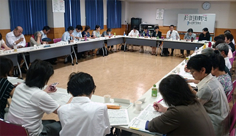

７月13日(火)13時30分より、コーププラザ浦和会議室にて、第４回実行委員会が開催され、32人(21団体)事務局２人が出席しました。

■議題
１．第３回実行委員会報告
事務局より、前回からの修正・変更点となる項目について確認しました。
２．基調報告第２次案について
第２次案を報告し、引き続き検討を行いました。年金の個人情報流出問題からも、マイナンバー制度導入にはもっと論調を強める必要があるのではないか、循環型社会の構築について消費者課題の中で触れた方が良いのではないかなどの意見があり、検討し次回の実行委員会で確認することになりました。
３．埼玉県への要請書について
要請書の検討の前に、要請書は実行委員会での検討を踏まえ作成するものであり、大会当日に意見を受けて修正するものではないことを確認しました。検討の中では、ゴミを焼却しないこと、食品ロスを減らすための埼玉県の取り組み強化、消費者団体への支援強化などが出されました。
４．大会当日の確認事項について
全体会オープニングについて検討し、終戦・被爆から70年の節目の年であり、平和に関する詩の朗読を行うことを確認しました。
５．記念講演テーマについて
｢一歩ふみだせば、何かが変わる～ひとり一人ができること～｣をテーマとして、現代の社会問題や私たち消費者がくらしの中で何ができるのかをお話いただきます。このテーマで講師の樋口恵子さんに発信することになりました。
６．分科会について
 食、
食、 消費者問題、
消費者問題、 社会保障、
社会保障、 くらしの問題、
くらしの問題、 憲法・法律の５つの分科会の実施を前回確認し、今回は具体的な講師の選定や、分科会のすすめ方について話し合いました。
憲法・法律の５つの分科会の実施を前回確認し、今回は具体的な講師の選定や、分科会のすすめ方について話し合いました。